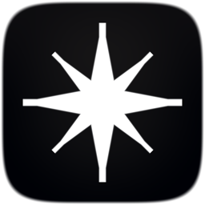

截得快
单击菜单栏进入区域截图，确认后直接编辑、复制、保存或钉图。

Flare Pro


单击菜单栏进入区域截图，确认后直接编辑、复制、保存或钉图。
全屏或框选区域录制，可选系统声音与清晰度；独立菜单与面板，支持暂停、倒计时。
标注、OCR、历史串在同一路径，截完就能说明问题。
Screenshot
区域、窗口、全屏、延时。选区带放大镜与尺寸参考；空格或回车确认后，工具栏可直达下一步。
⌘⌥5Recording
顶部「录制」菜单、主面板录制页、状态栏红点。全屏/区域、系统声音、清晰度可调，导出 H.264 MOV。
⌘⌥R 开始或停止Annotate
箭头、高亮、马赛克、序号用于快速说明；OCR 可导出文本。需要对照时，把图钉在桌面即可。
上手
系统设置 → 隐私与安全性 → 屏幕与系统音频录制，打开 Flare Pro，然后完全退出再打开。
单击菜单栏图标进入区域截图；右键可打开完整功能菜单。
用「录制」菜单或 ⌘⌥R。需要时再进主面板调整录制选项。